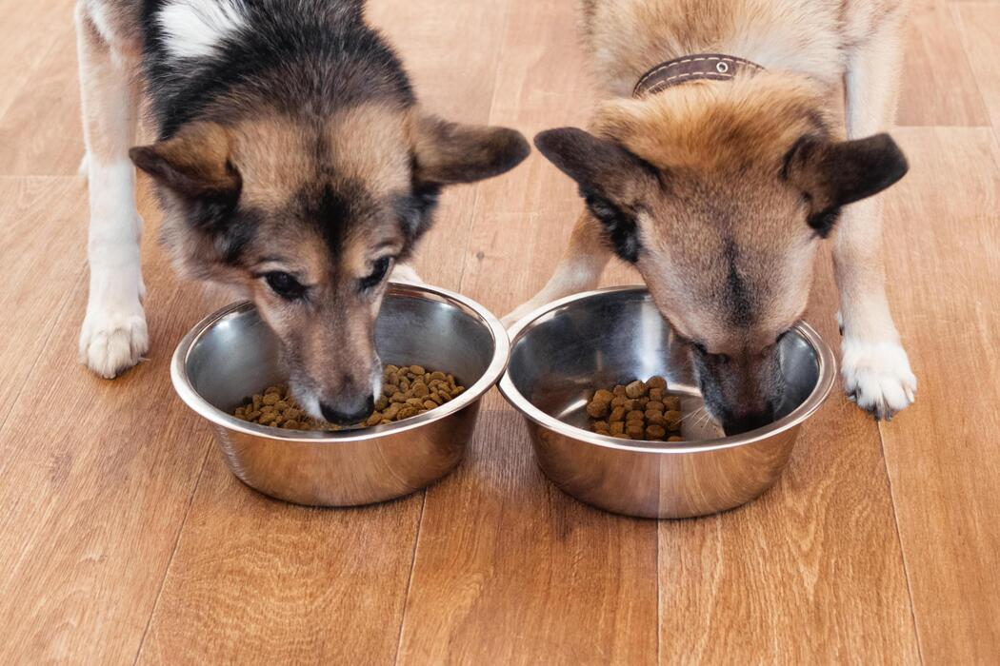
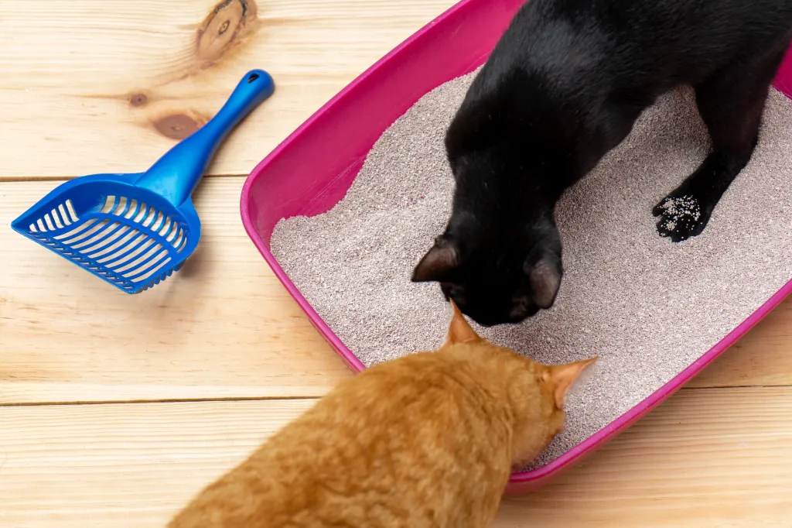
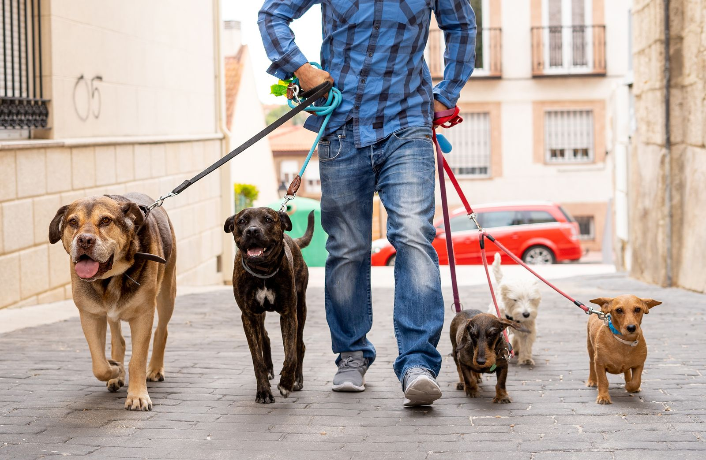

Alimentación e hidratación
Ofrecé alimento adecuado para su edad y tamaño. Asegurate de que siempre tenga agua limpia y fresca a disposición.

SU BIENESTAR TAMBIÉN DEPENDE DE NOSOTROS
Tener una mascota es mucho más que compartir momentos. Es asumir el compromiso de brindarle salud, protección, atención y cariño durante toda su vida.

TODOS LOS DÍAS
Pequeñas acciones cotidianas hacen una gran diferencia en la salud y la calidad de vida de nuestros animales.

Ofrecé alimento adecuado para su edad y tamaño. Asegurate de que siempre tenga agua limpia y fresca a disposición.

Mantené limpios sus espacios, sus recipientes y los elementos que utiliza. Prestá atención al cuidado del pelaje, las uñas y los oídos.

Prepará un lugar cómodo, limpio y protegido del frío, el calor y la lluvia. Todos necesitan un espacio tranquilo para descansar.
PREVENIR ES CUIDAR
Los controles veterinarios permiten prevenir enfermedades, detectar problemas a tiempo y acompañar cada etapa de su vida.
Ante cualquier síntoma o cambio de comportamiento, consultá con un profesional veterinario.
TAMBIÉN IMPORTA CÓMO SE SIENTEN
Necesitan afecto, estímulos, compañía y tiempo de calidad. Su bienestar emocional es parte fundamental de una vida feliz.
Compartí tiempo con ellos, respetá sus espacios y prestá atención a sus necesidades.
Ofrecé juegos y actividades apropiadas para su edad, energía y condición física.
Protegé balcones, ventanas, patios y accesos para evitar accidentes o escapes.
CADA UNO TIENE SUS NECESIDADES

UN COMPROMISO PARA TODA LA VIDA
Adoptar es el comienzo de una historia. Brindarles atención, respeto y protección es lo que permite que esa historia sea feliz.
Conocé a quienes esperan un hogar